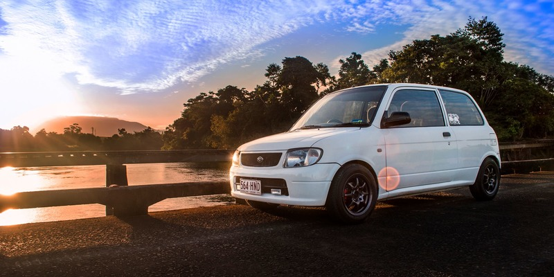

|  | ||
| Daihatsu — японська автомобілебудівна компанія, яку було утворено 1951 року як наступника організації Hatsudoki. В 1960-х роках було розпочато експорт автомобілів у країни Європи. | ||
| На останніх автосалонах у Франкфурті і Токіо Daihatsu представляла в основному концептуальні міні-автомобілі. Сьогодні Daihatsu - компанія з майже віковою історією, філософія якої полягає в корпоративному слогані: «We make it compact». У стрімко зростаючому автомобільному ринку саме компактність буде ключовим поняттям, як вважають в Daihatsu. У класі компактних міні-венів зараз в Японії і Європі справжній бум, і тут Daihatsu поза конкуренцією. Автомобілі компанії в даний час поставляються в понад 100 країн світу. | ||